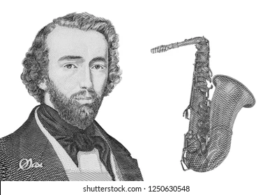

saxofone é um instrumento de sopro da família das madeiras, mas feito de metal (geralmente latão), que possui um corpo cônico, uma palheta simples e é produzido em diversos tamanhos. Seu som é gerado pela vibração da palheta na boquilha, controlada por um sistema de chaves e sapatilhas que abrem e fecham orifícios no corpo do instrumento. Existem quatro tipos principais: soprano, alto, tenor e barítono.
O saxofone foi inventado pelo belga Antoine Joseph Sax (Adolphe Sax) em Paris, em 1841. Ele adaptou a boquilha de um clarinete a um oficleide, criando um instrumento que combinava a potência sonora do metal com o som de sopro de madeira.

É composto basicamente por um tubo cônico, com cerca de 26 orifícios que têm as aberturas controladas por cerca de 23 chaves vedadas com sapatilhas feitas de couro e uma boquilha que pode ser de metal ou de resina, na qual se acopla uma palheta de bambu ou de material sintético.
A palheta está para o saxofone assim como a corda está para os instrumentos de corda. Ela é a responsável pela emissão do som pelo instrumento. Ao soprarmos a boquilha, é gerada uma coluna de ar que faz vibrar a palheta, produzindo o som.
Boquilha:Parte que se encaixa na boca e onde a palheta é fixada
Palheta: Uma lâmina flexível (geralmente de bambu) que vibra quando o ar é soprado através dela.
Tudel: Uma peça curva que conecta a boquilha ao corpo do saxofone.
Corpo : A parte principal do instrumento, onde se encontram os orifícios e os mecanismos das chaves.
Chaves e sapatilhas : Mecanismos com cerca de 26 orifícios que são vedados por sapatilhas para alterar as notas.
Os principais tipos de saxofone são o sopranino, soprano, alto, tenor, barítono, baixo e contrabaixo. Eles variam em tamanho e afinação, com os menores sendo mais agudos e os maiores produzindo sons mais graves.